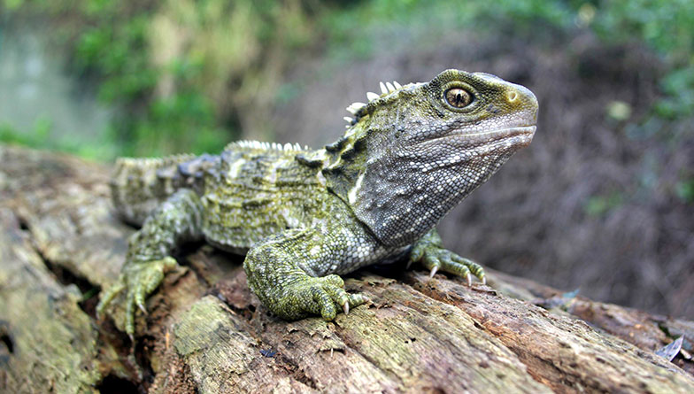
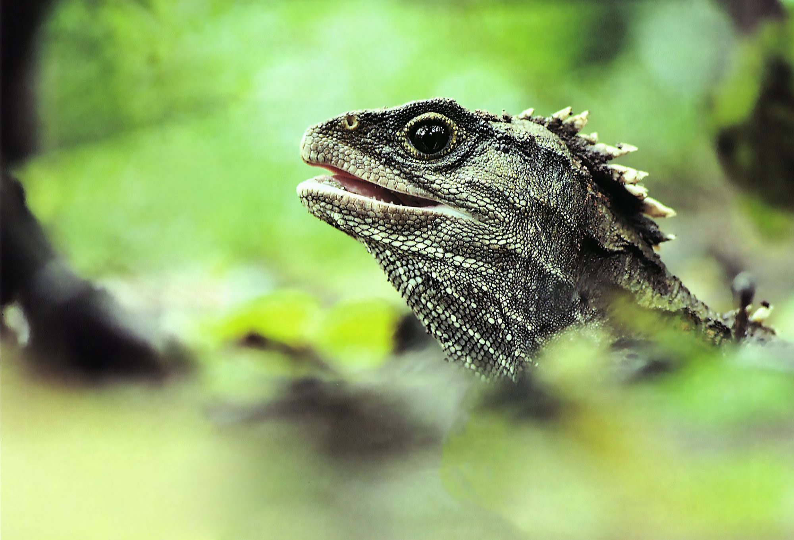

- they have a Third eye at the top of there head
- They have barely changed at all of the last 200 million years
- They can weigh up to 10 kgs and grow up to a meter long
- They live over 100 years and the continue to grow untill they are 35


Tuatara are the only surviving of a ancient reptillian order called Rhynchocephalia. the rest of the order was thriving around 200 million years ago. even though they look like lizards they are different having diverged around 250 million years ago the rest of the order died out around 60 million years ago. With the introduction of the Pacific rat the numbers of the tuatara die out fast with the only remaining ones being on islands
